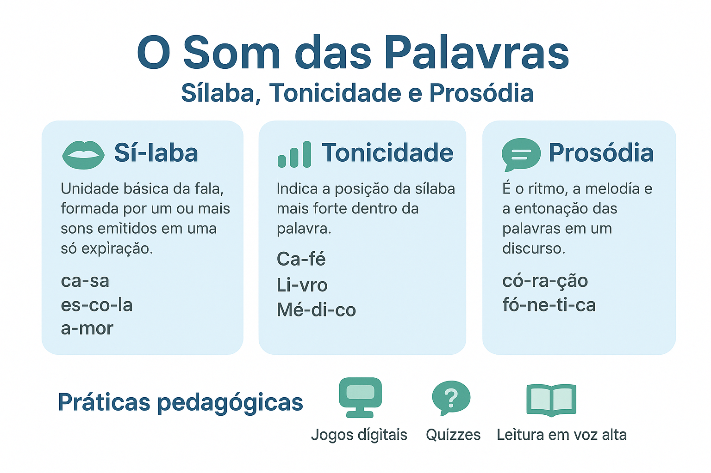

O Som das Palavras: Sílaba, Tonicidade e Prosódia na Língua Portuguesa
A materialidade fônica da Língua Portuguesa não é uma sucessão monótona de segmentos isolados, mas uma tessitura acústica dinâmica organizada por pulsações rítmicas, picos de intensidade e contornos melódicos. No coração dessa engenharia sonora atuam três dimensões interdependentes da Fonologia suprassegmental: a sílaba (unidade estrutural e rítmica básica), a tonicidade (o relevo de energia que hierarquiza os segmentos) e a prosódia (a modulação melódica e o acento léxico correto das palavras).
No ensino de língua materna, desvincular o estudo da acentuação gráfica da acústica silábica e da prosódia converte regras gramaticais em meros exercícios de memorização estéril. Antes de ser um sinal gráfico aposto na escrita (acento agudo ou circunflexo), o acento tônico é uma realidade fonológica viva que governa a distinção de significados, a eufonia poética e a clareza da comunicação cotidiana.
Neste guia fundamentado na fonologia descritiva e na gramática normativa padrão, examinaremos a arquitetura interna da sílaba (ataque, núcleo e coda), a escala trissilábica de tonicidade (oxítonas, paroxítonas e proparoxítonas), a função distintiva do acento léxico nos pares mínimos acentuais, o fenômeno das silabadas na prosódia e as orientações oficiais do Vocabulário Ortográfico da Língua Portuguesa (VOLP).

A arquitetura interna da sílaba: muito além da emissão de ar
Tradicionalmente, a gramática escolar define a sílaba como a unidade fonética emitida em um único golpe de voz ou impulso expiratório (CUNHA; CINTRA, 2001). Sob o prisma da Fonologia Moderna e Autossegmental (SILVA, 2010), a sílaba é descrita como um constituinte fonológico formal dotado de organização hierárquica bipartida:
- Ataque silábico (Onset): margem consonantal que precede o pico de energia (ex.: o /p/ em pa-no ou o grupo complexo /p-ɾ/ em pra-to);
- Rima: constituinte que engloba o ápice acústico e os segmentos que o fecham:
• Núcleo: elemento obrigatório, ocupado invariavelmente por uma vogal plena (ex.: o /a/ em mar);
• Coda: margem pós-nuclear que fecha a sílaba com uma semivogal ou consoante permitida pelo português (/s/, /ɾ/, /l/, ou arquifonema nasal /N/, como em pas-tel ou can-to).
Quanto à presença ou ausência de coda, a sílaba classifica-se em:
- Sílaba aberta (ou livre): termina diretamente no núcleo vocálico, sem consoante de travamento: li-vro, ca-fé;
- Sílaba fechada (ou travada): encerra-se em uma consoante ou semivogal na coda: por-ta, sol, can-tar.
Tonicidade: o relevo de intensidade e o valor distintivo do acento
No português, o acento léxico é do tipo dinâmico: a sílaba tônica projeta-se sobre as demais pela combinação harmoniosa de três fatores acústicos: maior intensidade (pressão expiratória), maior duração temporal (a vogal tônica é ligeiramente mais longa) e elevação de frequência fundamental (tom mais alto).
A função fonológica distintiva do acento tônico
Para Joaquim Mattoso Câmara Jr. (2011, p. 92), o acento em língua portuguesa tem valor fonológico autônomo e distintivo: “A tonicidade é um dos elementos essenciais para distinguir palavras e sentidos na língua portuguesa”. A simples alteração da posição do acento tônico transforma classes gramaticais e desfaz a identidade semântica das palavras, constituindo pares e trincas mínimas perfeitas:
• Sábia (adjetivo proparoxítono) ≠ Sabia (verbo paroxítono) ≠ Sabiá (substantivo oxítono);
• Fábrica (substantivo) ≠ Fabrica (verbo paroxítono);
• Exército (substantivo) ≠ Exercito (verbo paroxítono);
• Líquido (substantivo/adjetivo) ≠ Liquido (verbo paroxítono).
A gradação da energia silábica: tônicas, subtônicas e átonas
Na cadeia discursiva, as sílabas distribuem-se em diferentes graus de energia e saliência perceptiva:
Sílabas Tônicas
Representam o ápice absoluto de intensidade do vocábulo. Cada palavra possui rigorosamente apenas uma sílaba tônica principal.
Exemplos: a-mor, me-ni-no, ár-vo-re.
Sílabas Subtônicas
Apresentam intensidade secundária intermediária. Surgem tipicamente em palavras derivadas por sufixação (com -mente ou sufixos aumentativos/diminutivos).
Exemplos: ra-pi-da-men-te (ra é subtônica; men é tônica).
Sílabas Átonas
Articuladas com menor energia respiratória. Subdividem-se em pretônicas (antes do acento principal) e postônicas (após o acento principal).
Exemplos: ca (pretônica) em ca-fé; la (postônica) em ma-la.
A regra da janela de três sílabas (Princípio Trissilábico)
Ao contrário de idiomas como o polonês (acento fixo na penúltima sílaba) ou o francês (acento no final do grupo fônico), o português possui acento livre e restrito. Essa liberdade, contudo, é rigorosamente delimitada pela chamada janela de três sílabas: em palavras não compostas e sem clíticos, o acento tônico recai unicamente sobre uma das três últimas sílabas:
- Oxítonas (ou oxítonos): o acento tônico recai na última sílaba do vocábulo. Representam cerca de 25% do léxico: a-zul, ca-fé, re-lógio (na fala rápida), tam-bor, pa-pel;
- Paroxítonas (ou paroxítonos): o acento recai na penúltima sílaba. É o padrão fonológico hegemônico e natural do português, abrangendo mais de 70% das palavras: ca-sa, me-sa, li-vro, a-çú-car, ca-rá-ter;
- Proparoxítonas (ou proparoxítonos): o acento recai na antepenúltima sílaba. Por representarem o padrão de menor frequência e maior instabilidade rítmica, todas as palavras proparoxítonas são obrigatoriamente acentuadas graficamente na escrita oficial: lâm-pa-da, mé-di-co, quí-mi-ca, ár-vo-re.
Atenção: existem palavras "biparoxítonas" na Língua Portuguesa?
Não. Na estrutura léxica primária da Língua Portuguesa, é fonologicamente impossível haver acento na quarta ou quinta sílaba a partir do final (*biparoxítonas ou tetraparoxítonas). Ocorrências aparentes como contávamos-lhe ou amávamo-la resultam de processos morfossintáticos de ênclise de pronomes átonos a verbos já proparoxítonos, e não de vocábulos fonológicos puros.
Prosódia versus Ortoépia: a eufonia e as normas da elocução
No âmbito da fonologia normativa e da estilística da fala, é crucial distinguir dois conceitos comumente confundidos:
- Ortoépia (ou ortofonia): ocupa-se da correta articulação anatômica dos fonemas individuais e das combinações sonoras (ex.: pronunciar ad-vo-ga-do sem inserir a vogal intrusiva *adevogado, ou bueiro em vez de *boeiro);
- Prosódia: ocupa-se da correta localização do acento tônico no corpo da palavra e da melodia oracional, evitando alterações indevidas no relevo rítmico.
A patologia prosódica: a Silabada
Denomina-se silabada o erro prosódico consistente no deslocamento indevido da sílaba tônica. A silabada ocorre frequentemente quando falantes, por hipercorreção ou influência da analogia gráfica, transformam paroxítonas em proparoxítonas ou vice-versa:
| Vocábulo Padrão | Tonicidade Correta (Norma Culta / VOLP) | Silabada Frequente (Forma Incorreta) | Nota Fonética e Comentário Didático |
|---|---|---|---|
| rubrica | Paroxítona: ru-bri-ca | *rú-bri-ca | Não tem acento gráfico; o núcleo tônico é a sílaba -bri-. |
| recorde | Paroxítona: re-cor-de | *ré-cor-de | Origina-se do inglês record, mas aportuguesou-se como paroxítona. |
| pudico | Paroxítona: pu-di-co | *pú-di-co | Assim como impudico, tem a sílaba -di- tônica. |
| ibero | Paroxítona: i-be-ro | *í-be-ro | Refere-se à Península Ibérica; a sílaba tônica é -be-. |
| filantropo | Paroxítona: fi-lan-tro-po | *fi-lân-tro-po | Assim como mizantropo, tem acento no sufixo -tropo. |
| avaro | Paroxítona: a-va-ro | *á-va-ro | Sinônimo de sovina; tônica em -va-. |
| cateter | Oxítona: ca-te-ter | *ca-té-ter | Palavra oxítona com tônica na última sílaba, sem acento gráfico. |
| mister | Oxítona: mis-ter | *mís-ter | Significa necessidade urgente ("é mister fazer isso"); é oxítona. |
| gratuito | Paroxítona: gra-tui-to | *gra-tu-í-to | Contém ditongo decrescente (/w-i/); nunca deve soar como hiato. |
| circuito | Paroxítona: cir-cui-to | *cir-cu-í-to | Estrutura idêntica à de gratuito e fortuito. |
| leucocito | Paroxítona: leu-co-ci-to | *leu-có-ci-to | Forma clássica paroxítona, admitindo variante no VOLP. |
| interim | Proparoxítona: ín-te-rim | *in-te-rim | Rara proparoxítona sem acento gráfico no passado, hoje acentuada obrigatoriamente. |
Palavras com dupla prosódia aceita pelo VOLP
O Vocabulário Ortográfico da Língua Portuguesa admite legitimamente a coexistência de dupla acentuação prosódica para determinados termos eruditos ou de origem grega/francesa:
- Acróbata (proparoxítona) ou acrobata (paroxítona);
- Xérox (paroxítona) ou xerox (oxítona);
- Projétil (paroxítona terminada em -il: plural projéteis) ou projetil (oxítona: plural projetis);
- Hieróglifo (proparoxítona) ou hieroglifo (paroxítona);
- Boêmia (proparoxítona com hiato) ou boemia (paroxítona com ditongo);
- Oceânia (proparoxítona) ou Oceania (paroxítona).
Análise fonológica na prática: dissecação rítmica
Observe a segmentação analítica de palavras em questões práticas de elocução e métrica:
Caso 1: Vocábulo "Gratuito"
Estrutura silábica: Gra-tui-to (3 sílabas).
- Sílaba 1 (Gra): encontro consonantal perfeito (/g-ɾ/) + vogal /a/;
- Sílaba 2 (tui): consoante oclusiva /t/ + ditongo decrescente oral (/w-i/). É a sílaba tônica da palavra;
- Sílaba 3 (to): consoante /t/ + vogal átona final /u/;
- Classificação prosódica: Palavra paroxítona. É incorreto pronunciar como hiato *gra-tu-í-to.
Caso 2: A Trinca Mínima "Exército / Exercito / Exercitou"
A oscilação do acento desloca radicalmente a morfossintaxe do enunciado:
- E-xér-ci-to: proparoxítona, substantivo comum coletivo;
- E-xer-ci-to: paroxítona, forma do presente do indicativo do verbo exercitar (1ª pessoa);
- E-xer-ci-tou: oxítona terminada em ditongo, forma do pretérito perfeito do indicativo.
Esquema pedagógico: o itinerário da auditoria prosódica
Roteiro de Identificação e Checagem Prosódica
Pronuncie o vocábulo naturalmente em contexto de frase
→ Isole o ápice de intensidade sonora (a sílaba mais longa e nítida)
→ Conte a posição de trás para frente:
• Última sílaba: Oxítona.
• Penúltima sílaba: Paroxítona.
• Antepenúltima sílaba: Proparoxítona.
→ Verifique a ortografia normativa:
• É proparoxítona? O acento gráfico é obrigatório sem exceção.
• É paroxítona ou oxítona? Verifique as terminações normativas oficiais.
• É caso de dúvida clássica (rubrica, recorde)? Consulte o VOLP para evitar a silabada.
Questões para estudo e fixação
Questão 1 (Prosódia / Concurso Público - FGV)
Assinale a alternativa em que todos os vocábulos são paroxítonos na norma-padrão da Língua Portuguesa (desconsiderando acentos gráficos propositalmente omitidos):
A) Rubrica, avaro, filantropo, pudico.
B) Cateter, mister, interim, condor.
C) Nobel, ruim, sutil, ureter.
D) Leucocito, interim, refem, latex.
Ver resposta comentada
Resposta comentada: Alternativa A. Todos os termos da opção A são genuinamente paroxítonos: ru-bri-ca, a-va-ro, fi-lan-tro-po e pu-di-co. Na alternativa B, cateter, mister e condor são oxítonas, e ínterim é proparoxítona; na C, todas são oxítonas (No-bel, ru-im, su-til); na D, ínterim é proparoxítona e refém é oxítona.
Questão 2 (Valor Distintivo da Tonicidade / Vestibular)
O fenômeno linguístico em que a mudança na posição da sílaba tônica acarreta a alteração de significado e da classe gramatical entre palavras foneticamente semelhantes denomina-se:
A) Metaplasmo de supressão.
B) Par mínimo acentual.
C) Hiperbibasmo prosódico.
D) Resilaficação sintagmática.
Ver resposta comentada
Resposta comentada: Alternativa B. A alternância da posição do acento tônico estabelecendo distinção semântica (como em médico / medico / medicou) comprova o caráter fonológico e distintivo do acento na Língua Portuguesa, caracterizando os pares mínimos acentuais.
Questão 3 (Divisão Silábica e Estrutura Autossegmental)
Na divisão silábica da palavra "substância", a separação correta dos constituintes silábicos obedece a qual ordenação gráfica e fonológica?
Ver resposta comentada
Resposta comentada: A divisão ortográfica correta é subs-tân-cia (ou subs-tân-ci-a em contexto de hiato eventual). Na primeira sílaba (subs-), temos a consoante de ataque /s/, a vogal nuclear /u/ e a coda complexa formada pelas consoantes /b/ e /s/. Trata-se de uma sílaba fechada hipercomplexa.
Questão 4 (Dupla Prosódia no VOLP)
Assinale o par de palavras em que AMBOS os termos admitem legitimamente dupla pronúncia prosódica conforme o Vocabulário Ortográfico da Língua Portuguesa:
A) Rubrica e recorde.
B) Acróbata e xérox.
C) Filantropo e pudico.
D) Gratuito e circuito.
Ver resposta comentada
Resposta comentada: Alternativa B. Tanto acróbata/acrobata quanto xérox/xerox possuem dupla prosódia oficialmente reconhecida pelo VOLP e pela Academia Brasileira de Letras. Nas demais alternativas, os vocábulos admitem exclusivamente a pronúncia paroxítona, sendo qualquer alteração considerada silabada.
Questão 5 (Transposição Didática e BNCC)
Como o trabalho consciente com a prosódia e a musicalidade da fala auxilia os estudantes na interpretação e na produção de textos poéticos e oratórios?
Ver resposta comentada
Resposta comentada: A prosódia governa o ritmo, a métrica (como o decassílabo ou a redondilha), a cadência e as pausas oratórias. Compreender a alternância entre sílabas átonas e tônicas permite ao aluno dominar o ritmo do verso poético, evitar a monotonia na leitura oral e empregar a entonação expressiva para sinalizar intenções discursivas, ironias e ênfases argumentativas.
Resumo do som das palavras: sílaba, tonicidade e prosódia
- Sílaba: estrutura rítmica composta obrigatoriamente por um único núcleo vocálico, podendo conter ataque e coda consonantais;
- Sílaba aberta: termina em vogal; Sílaba fechada: termina em consoante ou semivogal;
- Tonicidade: o relevo de intensidade, duração e tom que destaca a sílaba principal (tônica) frente às átonas;
- Janela trissilábica: no português, a tônica só pode recair na última (oxítona), penúltima (paroxítona) ou antepenúltima sílaba (proparoxítona);
- O acento tônico possui valor fonológico distintivo, alterando o sentido de palavras em pares mínimos (sábia / sabia / sabiá);
- Ortoépia rege a pronúncia correta dos fonemas; Prosódia rege a posição correta do acento tônico;
- Silabada: erro de prosódia que consiste em deslocar indevidamente a sílaba tônica (ex.: pronunciar *rúbrica em vez de rubrica);
- Determinados termos eruditos contam com dupla prosódia abonada pelo VOLP (ex.: acróbata/acrobata).
Perguntas frequentes sobre sílaba, tonicidade e prosódia
Por que toda proparoxítona é acentuada graficamente?
Porque o padrão de acentuação predominante e natural no português é a paroxítona (mais de 70% das palavras). As proparoxítonas representam uma minoria rítmica excepcional e instável; por isso, a norma ortográfica convencionou marcar todas elas graficamente para sinalizar sua quebra de expectativa acústica.
A palavra "rubrica" pode ter acento na letra "u"?
Não. A palavra rubrica é paroxítona (ru-bri-ca). Pronunciá-la ou grafá-la como *rúbrica é um clássico erro de prosódia (silabada) rejeitado pela norma culta e pelo VOLP.
Como identificar a sílaba tônica em palavras que não têm acento gráfico?
Um método prático consiste em "chamar" a palavra à distância, como se chamasse alguém no portão (ex.: "Gra-tuiiiii-to!", "Li-vrooooo!", "Ru-briiiii-ca!"). A sílaba que se estende por mais tempo e com maior elevação de voz é invariavelmente a sílaba tônica.
Qual é a diferença entre monossílabo átono e monossílabo tônico?
O monossílabo átono é desprovido de força acústica própria e apoia-se foneticamente na palavra vizinha (artigos, preposições e pronomes oblíquos como de, me, o). O monossílabo tônico possui autonomia fonética e semântica própria (como mar, pá, nó, sol).
O que é uma palavra subtônica?
É a sílaba que possuía acento tônico na palavra primitiva, mas que, ao receber um sufixo acentuado (como -mente ou -zinho), perde a primazia e passa a soar com intensidade secundária intermediária (ex.: o fa em fa-cil-men-te).
Por que "recorde" não tem acento na letra "e"?
Porque em português a palavra aportuguesou-se como paroxítona (re-cor-de), rimando com acorde. A forma com acento (*récorde) decorre da tentativa errônea de imitar a tonicidade da língua inglesa de origem.
O que é hiperbibasmo?
É a figura de linguagem fonológica que consiste na translação ou deslocamento do acento tônico de uma sílaba para outra, gênero do qual a silabada é a manifestação desviante mais comum.
Palavras terminadas em ditongo crescente são paroxítonas ou proparoxítonas?
Na tradição gramatical e nas regras ortográficas escolares brasileiras, palavras como his-tó-ria, sé-rie e á-gua são classificadas oficialmente como paroxítonas terminadas em ditongo crescente. Contudo, a fonologia também reconhece que, em dicção pausada, podem soar como proparoxítonas eventuais ou relativas (his-tó-ri-a).
Considerações finais
Compreender a tríade formada por sílaba, tonicidade e prosódia é desvelar a alma rítmica e musical da Língua Portuguesa. Longe de constituir um conjunto de regras abstratas destinadas a penalizar alunos em provas, o estudo da fonologia suprassegmental capacita o falante a exercer pleno domínio sobre a expressividade da voz, a precisão vocabular e a segurança ortográfica na escrita.
Ao integrar o entendimento do núcleo silábico com o reconhecimento da janela trissilábica e a vigilância contra as silabadas, o estudante, o candidato a concursos e o profissional da comunicação adquirem uma consciência metalinguística madura, transformando a língua materna em instrumento refinado de clareza, beleza e autoridade discursiva.
Conteúdos relacionados
- Fonologia: fonemas, sílabas e estrutura sonora da Língua Portuguesa — Índice de Conteúdos
- Fonema e Letra: Uma distinção fundamental na análise linguística
- Tipos de Fonemas: Vogais, Semivogais e Consoantes
- Encontros Vocálicos e Consonantais: Quando os sons se encontram
- Hiatos, Ditongos e Tritongos: como identificar e exemplos
- Classificação Fonética Detalhada das Vogais
- Fonologia das Semivogais (Glides / Semiconsoantes)
- Fonologia e Fonética: distinções conceituais
- Processo de Elisão (ou Supressão) de Segmentos Fonológicos
Referências
- BECHARA, Evanildo. Moderna Gramática Portuguesa. 37. ed. rev. e ampl. Rio de Janeiro: Nova Fronteira, 2009.
- CAGLIARI, Luiz Carlos. Alfabetização e Linguística. 10. ed. São Paulo: Scipione, 2009.
- CÂMARA JR., Joaquim Mattoso. Estrutura da Língua Portuguesa. 20. ed. Petrópolis: Vozes, 2011.
- CÂMARA JR., Joaquim Mattoso. Problemas de Linguística Descritiva. 18. ed. Petrópolis: Vozes, 2004.
- CUNHA, Celso; CINTRA, Lindley. Nova Gramática do Português Contemporâneo. 3. ed. Rio de Janeiro: Nova Fronteira, 2001.
- ROCHA LIMA, Carlos Henrique da. Gramática Normativa da Língua Portuguesa. 47. ed. Rio de Janeiro: José Olympio, 2002.
- SILVA, Thaïs Cristófaro. Fonética e Fonologia do Português: roteiro de estudos e guia de exercícios. 10. ed. São Paulo: Contexto, 2010.
Explore outros conteúdos
Continue seus estudos acessando outras seções do site Mestre Kira: